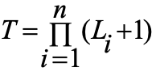
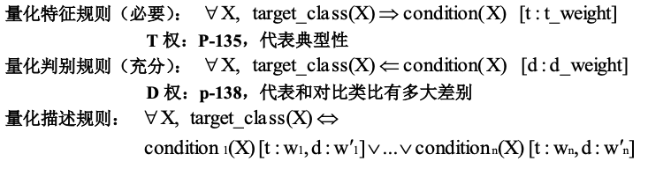
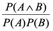

总论
数据挖掘：是从大量数据中发现有趣模式，这些数据可以存放在数据库，数据仓库或其他信息存储中。
概念/类描述：一种数据泛化形式，用汇总的、简洁的和精确的方法描述各个类和概念，通过
- 数据特征化：目标类数据的一般特性或特征的汇总；
- 数据区分：将目标类数据的一般特性与一个或多个对比类进行比较；
- 数据特征化和比较来得到。
关联分析：发现关联规则，这些规则展示属性-值频繁地在给定数据集中一起出现的条件，通常要满足最小支持度阈值和最小置信度阈值。
分类：找出能够描述和区分数据类或概念的模型，以便能够使用模型预测类标号未知的对象类，导出的模型是基于训练集的分析。导出模型的算法：决策树、神经网络、贝叶斯、（遗传、粗糙集、模糊集）。
预测：建立连续值函数模型，预测空缺的或不知道的数值数据集。
孤立点：与数据的一般行为或模型不一致的数据对象。
聚类：分析数据对象，而不考虑已知的类标记。训练数据中不提供类标记，对象根据最大化类内的相似性和最小化类间的原则进行聚类或分组，从而产生类标号。
第二章数据仓库
数据仓库：是一个面向主题的、集成的、时变的、非易失的数据集合，支持管理部门的决策过程。从一个或多个数据源收集信息，存放在一个一致的模式下。数据仓库通过数据清理、变换、继承、装入和定期刷新过程来构造。
联机事务处理OLTP：主要任务是执行联机事务和查询处理。
联系分析处理OLAP：数据仓库系统在数据分析和决策方面为用户或’知识工人’提供服务。这种系统可以用不同的格式和组织提供数据。
最流行的数据仓库数据模型是多维数据模型，这种模型可以是星形模式、雪花模式、事实星座模式。
上卷：上卷操作通过一个维的概念分层向上攀升或者通过维规约，在数据立方体上进行聚集。
下钻：下钻是上卷的逆操作，它由不太详细的数据到更详细的数据。
数据仓库模型的不同类型：
- 企业仓库：收集了关于整个组织关于主题的所有信息，跨越整个组织，因此是企业范围的。
- 数据集市：是企业仓库的一个部门子集，它针对选定的主题，对于特定的用户是有用的，因此是部门范围的，其数据通常是汇总的。
- 虚拟仓库：虚拟仓库是操作数据库上视图的集合，易于建立，但需要操作数据库服务器具有剩余能力。
数据仓库的三层结构：
- 仓库数据服务器：使用后端工具（抽取、清晰、转换、装载、刷新）和实用程序由操作数据库和其他外部数据源提取数据，进行数据清理和变换并放入仓库底层
- OLAP 服务器：直接实现对多维数据的操作,直接为商务用户提供来自数据仓库或数据集市的多维数据。
- 前端客户层：包括查询和报表工具、分析工具或数据挖掘工具。
数据仓库的设计：
- 分析建立企业模型并映射到数据仓库概念模型；
- 逻辑模型的设计
- 物理模型的设计
逻辑模型设计：
- 系统数据量估算；
- 数据粒度的选择；
- 数据的分割（到各自的物理单元单独处理）
- 表的合理划分（字段的更新频率和访问频率不一样——稳定性）
- 删除纯操作数据（“收款人”），增加导出字段（“销售总量”）
元数据：描述数据的数据，数据仓库的结构、操作元数据（数据血统、流通）、用于汇总的算法、从操作环境到数据仓库的映射；关于系统性能的数据、商务元数据。
记录系统：指明数据仓库中关系表的各个字段来源于业务数据库何处
物理模型的设计：
- 确定数据的存储结构（并行RAID）
- 索引策略（位图索引、连接索引）
- 位图索引：属性的每一个值 $v$ 都有一个位向量，长度为记录的总数，如果数据表中给定行上该属性的值为 $v$, 则在位图索引的对应行上标注该值的位为 $1$，其余为 $0$，不适用于基数很大的属性。
- 连接索引：传统的索引将给定列上的值映射到具有该值的行的列表上，连接索引登记来自关系数据库的两个关系的可连接行，对于维护来自可连接的关系的外码和与之匹配的主码的联系特别有用（事实表——维表）。
- 数据存储策略与性能优化（多路聚集优化、表的归并、分割表的存放、按列存储、存储分配优化）
- 数据装载接口
- 并行优化设计

物化：预计算方体。数据立方体计算中多路数组聚集，多路计算
BUC：bottom-up computation
数据立方体允许以多维数据建模和观察，它由维和事实定义。维是关于一个组织想要记录的透视或实体，事实是数值度量的。
数据预处理
数据预处理：不完整的、含噪音的、不一致的
- 数据清洗（缺失值、噪声、非一致） 、
- 数据集成（模式集成、发现冗余、数据值冲突检测和处理） 、
- 数据变换（光滑、聚集、泛化、规范化、属性构造） 、
- 数据规约（数据立方体聚集、属性子集选择、维度规约、数值规约、离散化和概念分层产生） 、
- 数据离散化（数值数据：分箱、直方图、聚类、基于熵的离散化、基于直观划分离散化 3-4-5 规则（区间的最高有效位的取值个数） ；
分类数据：用户或专家在模式级显示说明属性偏序、通过显示数据分组说明分层结构的一部分、说明属性集但不说明偏序（层次高，属性值个数越少）、只说明部分属性集（嵌入数据语义，是语义相关的属性集捆绑在一起） ） 。
噪声：被测量的变量的随机误差或方差。
噪音数据处理：分箱（按箱平均值平滑、按箱中值平滑、按箱边界平滑）、回归、聚类。
规范化：
- 最小-最大规范化；
- Z-score 规范化；
- 小数定标规范化
属性子集选择：删除不相关或冗余的属性，找到最小属性集，使数据类的概率分布尽可能地接近使用所有属性得到的原分布。
决策树归纳：用于从一组数据中归纳或学习出一个决策树模型。这种方法主要用于分类和回归问题。
维规约：使用编码机制减小数据集的规模,如压缩。
数值规约：用替代的、较小的数据表示替换或估计数据，如参数模型 or 非参方法（聚类、抽样、直方图（Equi-depth、equi-width、v-optimal、maxdiff）
概念分层：对一个属性递归地进行离散化，产生属性值的分层或多分辨率划分。
离散化：用少数区间标记替换连续属性的数值，从而减少和简化原来的数据。
特征化和区分
描述性数据挖掘：以简洁概要的方式描述概念或数据集，并提供数据的有趣的一般性质。
预测性数据挖掘：分析数据，建立一个或一组模型，并试图预测新数据集的行为或趋势。
OLAP（基于数据立方体的多维数组） VS 概念描述：处理类型、自动化方面比较各自优缺点。
- OLAP（联机分析处理）：
- 处理类型：ROLAP（关系型联机分析处理），MOLAP（多维联机分析处理），HOLAP（混合联机分析处理）
- 自动化方面：提供高性能查询和交互式分析，但是复杂性和存储开销较大。
- 概念描述
- 处理类型：概念建模，将现实世界的概念和关系转化为模型，通常涉及使用概念图或实体-关系图进行描述。
- 自动化方面：提供清晰的概念表达和抽象层次，但是不直接用于实际数据存储和查询。
数据泛化：
- 数据泛化是一种隐私保护的技术手段，旨在通过对敏感信息进行模糊或扰动，以便在保持数据可用性的同时，减少对个人隐私的潜在威胁。在数据泛化中，原始数据中的具体值被替换为更一般或抽象的值，从而在一定程度上隐藏了数据的真实含义。
- 途径：
- 数据立方体（OLAP 途径）
- 面向属性的归纳
面向属性的归纳：
- 使用数据库查询收集任务相关的数据
- 考察相关任务集中的各个属性并进行泛化：通过属性删除（两种情况）或者属性泛化
- 通过合并相等的广义元组（每个广义元组代表一个规则析取）并累计对应的计数值进行聚集；表现形式：广义关系（表）、交叉表、图、量化特征规则。
属性泛化控制：属性泛化阈值控制；广义关系阈值控制；P-131
特征化 VS OLAP：
- 相同点：在不同层次汇总；迭代的上卷、下钻、旋转、切片/块
- 不同点：特征化：自动产生层次的分配；多个相关维时进行维的相关分析和排序；维度量的类型可以很复杂
量化规则：带有量化信息的逻辑规则
解析特征化：
- 收集任务相关数据
- 根据属性分析阈值分析泛化（对目标类和对比类的候选关系） ：属性删除、属性泛化、候选关系
- 属性的相关性分析（信息增益）
- （去除不/弱相关，对比类的候选关系）形成目标类的初始工作关系
- 在初始工作关系上根据属性泛化阈值使用面向属性的归纳
类对比：
- 通过查询处理收集数据库中的相关数据集，并分别划分成目标类和一个或多个对比类。
- 维相关分析（仅选择高度相关的维进一步分析，相关度量/熵的度量）
- 同步泛化
- 通过对目标类和对比类使用下钻、上卷和其他 OLAP 操作调整比较描述的抽象层次。
- 导出比较的表示

关联规则挖掘
关联规则挖掘：从操作型数据库、关联数据库或者其他信息库中的项集、对象中，发现频繁模式、关联、相关或者因果结构
两步过程：
- 找出所有的频繁项集
- 有频繁项集产生强关联规则
Apriori 算法：使用候选产生发现频繁项集（1）连接步（2）剪枝步（子集测试）使用逐层搜索的迭代方法，k 项集用于探索（k+1）项集。首先，通过扫描数据库，累计每个项的计数，并收集满足最小支持度的项，找出频繁 1 项集的集合。该集合记做 L1。然后，L1 用于找到频繁 2 项集的集合 L2，L2 用于找L3，如此下去，直到不能再找到频繁 k 项集。找每个 Lk 需要一次数据库全扫描。
Apriori 性质：频繁项集的所有非空子集也必须是频繁
Apriori 核心：用 k 项集生成k+1 项集；使用数据库扫描和模式匹配收集候选项集计数
Apriori 瓶颈：候选项集计算量大尤其是 1 频繁项集自交叉生成 2 候选项集时；数据库多次扫描，每次抽取都要扫描
由Apriori 产生频繁项集产生关联规则： 由频繁项集直接产生强关联规则 $s \rightarrow (l-s)$，$s$ 为 $l$ 的非空子集
提高Apriori 算法的效率：
- 基于散列的技术：一种基于散列的技术可以用于压缩候选 k 项集 Ck（eg：在 C1 中产生 L1 的过程中，可对每个事务产生所有的 2 项集，并将它们散列到散列表结构的不同桶中，并增加对应的桶计数，计数低于最小支持桶中的 2 项集应从2 候选项集中删除）
- 事务压缩：不包含任何K 频繁项集的事务不可能产生>K 的FI 应在后继的扫描中删除
- 划分：任何频繁项集必须作为局部频繁项集至少出现在一个划分中。
- 抽样：在样本上降低阈值
- 动态项集计数：只有子项集都频繁才将其加入候选项集
FP 树：发现频繁项集而不产生候选；分治策略；首先将提供频繁项的数据库压缩到一棵 FP 树上，仍然保留项集相关信息。然后将压缩后的数据库划分为一组条件数据库，每个关联一个频繁项或模式段，并分别挖掘每个条件数据库。
FP 挖掘过程：由每个长度为 1 的频繁模式（初始后缀模式）开始，构造它的条件模式基（一个"子数据库"，由 FP 树中与后缀模式一起出现的前缀路径集组成），然后构造它的（条件）FP 树，并递归地对该树进行挖掘直到 FP 树为空或者只有单个频繁模式路径。模式增长通过后缀模式与条件 FP 树产生的频繁模式连接实现（abcdef 频繁当且仅当 abcde 频繁，且 f 在包含 abcde 的事务中也是频繁的，“cm"例子） 。
FP 核心：利用FP 树递归地增长频繁模式路径（分治）
FP 优点：去除了不相关的信息；出去节点连接和计数规模比原数据库小；快速；将发现长频繁模式的问题转换成递归地搜索一些较短的模式。
FP 性能优于Apriori 的原因：
- 没有候选的产生
- 采用紧凑的数据结构
- 消除了对数据库的重复扫描
- 基本的操作既是对 FP 的构建和计数
提升度（lift）：
 与1 比较（相关分析）
多层关联规则挖掘
- 多层关联规则：在多个抽象层上挖掘数据产生的关联规则。
- 一致支持度、递减支持度、基于分组的支持度
- 递减支持度策略
- 分层独立策略：检查所有的节点而不考虑其父节点是否频繁
- K 项集交叉层次过滤：
分类和预测
分类：找出描述并区分数据类或概念的模型，以便能够使用模型预测未知对象类的类标记，模型的构建依赖于训练集和分类属性的类标号的使用。
预测：建立连续值函数模型，预测某些空缺的或不知道的数据值而不是类标记。
从数据分析的角度来看
监督学习（分类）：提供了每个训练元组的类标号，未知元组通过由训练元组构造的模型来定性类标号的预测
非监督学习（聚类）：每个训练元组的类标号是未知的，并且要学习的类的个数或集合也可能事先不知道，力求寻找类或聚类的存在。
测试集来评估模型的正确性
决策树：P-188，构造；剪枝（反映噪声和离群点）；不能预测隐藏在训练元组中的不可见样本
Basic algorithm (a greedy algorithm)自顶向下、递归、分治的贪心策略：
- Tree is constructed in a top-down recursive divide-and-conquer manner
- At start, all the training examples are at the root
- Attributes are categorical (if continuous-valued, they are discretized in advance)
- Examples are partitioned recursively based on selected attributes
- Test attributes are selected on the basis of a heuristic or statistical measure (e.g.,information gain)
结束条件：
- 所有的样本都属于同一个类
- 没有剩余的样本可用
- 没有剩余的属性（投票
避免过度拟合：前剪枝（在构造过程中，预定义阈值） VS 后剪枝（构造完成，用其子树中最频繁的类标记）：
贝叶斯：概率学习、增量、概率预测、标准，可以解决不可见样本问题 sample X ，class label C 寻找使 P(C|X)最大的X
朴素假设：类条件独立 $P(x_1,…,x_k|C) = P(x_1|C)·…·P(x_k|C)$，当出现新的独立类时可在原基础上直接计算，即增量
神经网络：一组连接的输入输出单元，每个连接都有一个权重与之相关联，在学习阶段通过调整这些权重能够预测输入元组的正确类标号。
后向传播(图)：初始化权重——向前传播输入——向后传播误差——调整权值——终止条件终止：超过预先指定的周期数；前一周期的权值调整小于预定值/误分的百分比小于预定值。
- Step1: feed forward input from input layer to hidden layer to output layer
- Step2: compute the error of the output layer
- Step3: back propagate the error from output layer to hidden layer
- Step4: adjust weights and biases.
- Step5: if termination criterion is satisfied , stop. Otherwise go to step1.
后向传播： 通过迭代地处理一组训练样本，将每个样本的网络预测与实际知道的类标号比较，进行学习。对于每个训练样本，修改权，使得网络预测和实际类之间的均方误差最小，这种修改"后向"进行。
向前传播输入：计算隐藏层和输出层每个单元的净输入和输出。
向后传播误差：通过更新权和偏置以反映网络预测的误差，向后传播误差。
急切学习法：在接收待分类的新元组之前构造分类模型。
懒惰学习法：给定训练元组时，只是简单存储，并一直等到待检验元组出现才进行泛化，以便根据存储的训练元组的相似性对元组进行分类。
- K-近邻 找到最接近未知元组的 K 个训练元组
- 基于案例推理
粗糙集：基于等价类的建立，给定类的粗糙集定义用两个集合近似：上近似，不能认为不属于C 的集合；下近似：必定属于 C 的集合。分类精度高，处理离散属性
模糊集：对每个类定义"模糊"的阈值和边界，模糊逻辑 0-0.1 之间的真值表示一个特定的值是一个给定类成员的隶属程度，而不是用精确的截断，每个类表示一个模糊集。分类正确性的验证：划分（独立的训练集和测试集，大规模） ；交叉验证（K 个子样本集，中等规模）
分类和预测的组装方法：
- 装袋：有训练集有放回随即抽样产生 N 个训练子集，导出 N 个模型，对未知数据，给出对应的N 个结果，分类-多数表决；预测-均值
- 提升：有训练集有放回随即抽样产生 N 个训练子集，导出 N 个模型，每个训练元组都赋予一个权重，对每个训练元组从 1-N 模型迭代地进行，重整每个元组的权重，使得在下一轮更关注上一轮误分的元组，并计算每个模型的投票权重，分类返回具有最大权重的类
聚类挖掘
聚类：要划分的类是未知的，将数据对象分组成为多个类或簇，在同一个簇中的对象之间具有较高的相似度，而不同簇中的对象差别较大。
划分方法：
-
K-均值：以K 为输入参数，将对象分为 K 个簇，是簇内~，簇外~
- 随即选择 K 个对象作为K 个簇的中心
- 选择离 K 最近的点形成簇
- 更具簇中的点计算新的均值，这个均值可以看做簇的中心OR 质心
- 以新的中心更新簇，从步骤 2 开始重复直到簇不在变化
- 优点：相对可伸缩，有效率；往往终止局部最优解；
- 缺点：用户给出 K；对分类属性的数据均值无定义；对噪声和离群点敏感，不适合凹形
-
K-中心点算法：簇的中心必须落在某个是在的点上，对噪声不敏感
层次方法：凝聚的；分裂的；优点：在运行中可随时停止，不要K 参数；缺点：不可回溯
基于密度的方法：
- 优点：
- 发现任意形状的簇；
- 处理噪声；
- 一次扫描；
- 需要密度参数作为终止条件；
DBSCAN：密度可达和密度相连
- 邻域
- 核心对象
- 直接密度可达：
- 密度可达：对象链 Pi+1 是从Pi 关于 E 和 MINPTS 直接密度可达的，则对象 P1 是从 Pn 关于~密度可达的。
- 密度相连：p,q 都是从o 关于~密度可达的，则 p 到q 是关于~密度相连的。基于密度的簇是基于密度可达性的最大密度相连对象的集合，不包含在簇中的认为是噪声（MINPTS 的限制不可能成为核心对象）。
离群点：与数据的一般行为或模型不一致。
- 基于统计分布：例如正态分布的3σ 以外的区域
- 基于距离：
- 阈值1：D;
- 阈值2：水平eg:95%
- 到其他点的距离有大于95%的大于D，则认为是离群点
- 基于偏差：首先假设一个模型，根据假设模型检查筛选（发现驱动的探查）